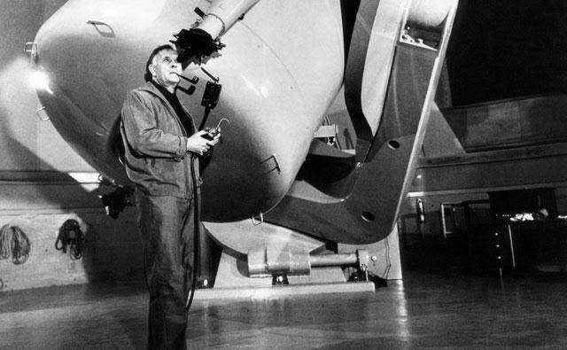

Archive · Greek science communication
Edwin Hubble and the Expanding Universe
A short science-history note on Hubble's observations and the expanding Universe.
This is an archived short-form science communication piece originally written in Greek for social media. The original wording is preserved rather than rewritten as a current article; some links and references may therefore be dated.

Original Greek text
Ο κύριος με την πίπα ειναι ο Έντγουιν Χαμπλ. Γεννήθηκε σαν σήμερα.
Κοιτώντας με την τηλεσκοπιάρα του τον ουρανό παρατήρησε οτι οι γαλαξίες όλο και απομακρύνονται μεταξύ τους.
Με βάση αυτο επιβεβαιώθηκε παρατηρησιακά η συνεχομενη διαστολή του Σύμπαντος και συνεκδοχικά η θεωρία του Big Bang, αφού αν όλα απομακρύνονται συνεχώς, κάποτε θα ξεκίνησαν από το ίδιο σημείο.